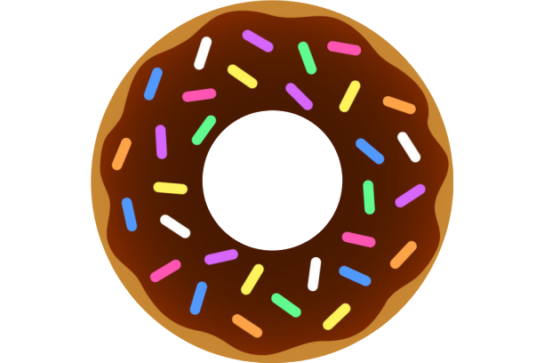
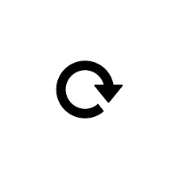

0
1
0
100
0
10
Fred the Baker has spent his whole life making donuts and building his donut empire. Fred the Baker has made it his life goal to make delicious donuts. Fred after 75 years of making delicious donuts is ready to retire. This game was created to honor Fred and love of donut making.
To play click the  to make donuts. Once you have enough you can purchase an auto-clicker which will click for you. Also you can purchase click multipliers which will increase how donuts you make per click. If you would like to reset the game, click the  button.
This donut maker game was inspired by the Cookie Clicker game.
Cookie Clicker WebsiteMy name is Trey Grace. Thanks for playing my Donut Clicker Game. This was fun project to start learning JavaScript while at We Can Code IT. You can learn more about me on my Personal Portfolio Website, see this project on github, my other projects on my github profile, or connect with me on LinkedIn.